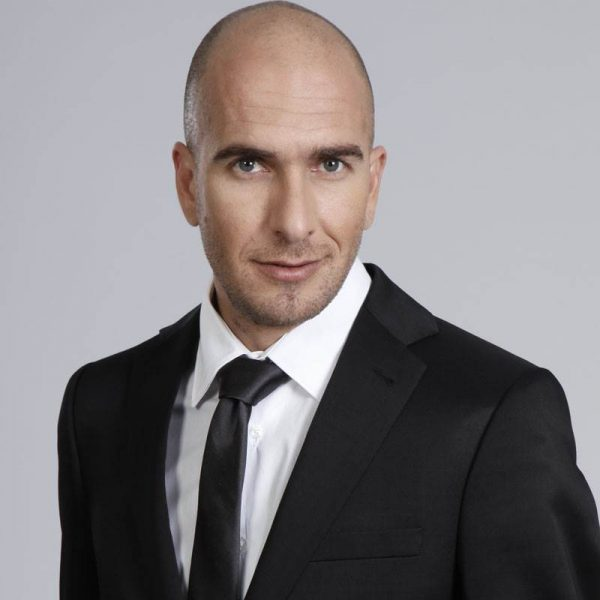

אסי כהן
Local time:
הקדמה
אסי כהן (נולד ב-10 באוקטובר 1974) הוא קומיקאי, שחקן, תסריטאי וסטנדאפיסט ישראלי.
מהלך הקריירה
נולד, גדל והתחנך באשדוד . למד בתיכון המקיף ג' ע"ש רוגוזין בעירו. אחיו יוני כהן היה הבסיסט של להקת "מרסדס בנד".
את שירותו בצה"ל עשה בחיל הקשר. לאחר שירותו הצבאי, החל את דרכו בתחום המשחק והבידור. תחילה, החל משנת 1996, הופיע כאמן סטנד-אפ במועדון הידוע דומינו גרוס.
בשנת 1998 השתתף בתפקיד אורח בסדרת הדרמה הטלוויזיונית "20 פלוס", ששודרה בערוץ 2. בשנת 1999 פרץ לראשונה לתודעת הקהל כאשר השתתף בתוכנית המערכונים הקומית "דומינו" בערוץ 2, לצדם של עוד קומיקאים צעירים בזמנו, כמו: אדיר מילר, רותם אבוהב, רועי בר נתן וגורי אלפי.
ב-1999 הקים כהן יחד עם גורי אלפי את הצמד הקומי "אסי וגורי", במהלך השתתפותם בתוכנית "דומינו". יחד הם הופיעו במופעי בידור בכל רחבי הארץ. בהופעותיהם יצרו, בין השאר, גם את הדמויות הקומיות הנודעות ביותר שלהם "דוד ותקווה" ו"קוקו וסטיב".
בשנים 2000–2002 השתתף בתוכנית הבידור "רק בישראל" בערוץ 2 של קשת, לצד גורי אלפי, אורנה בנאי וארז טל במהלך סוף עונתה השנייה, כל עונתה השלישית, ותחילת עונתה הרביעית. בשנת 2001, במקביל להופעותיו בצמד עם אלפי, שיחק כהן בסרטם של רם נהרי ותמר מרום "כוכב זורח מעל הלב" שהוקרן בכבלים, לצדן של דאנה איבגי, עירית שלג ואילנה ברקוביץ'.
בשנת 2002 יצר, כתב ושיחק, בתוכנית הקאלט הקומית "שידורי המהפכה" בערוץ 2 של רשת, בה כיכב לצד גורי אלפי. בנוסף, שיחק תפקיד משנה בסרט הקולנוע "יוסי וג'אגר" והשתתף בתוכנית הקומית "לא נפסיק לצחוק". בשנת 2003 שיחק בסרט הקולנוע של שמי זרחין "הכוכבים של שלומי". שנה זו הייתה גם השנה בה פירקו הוא ואלפי את הצמד, חדלו מלהופיע במשותף וכל אחד מהם המשיך בקריירת משחק עצמאית.
בשנת 2004 שב כהן לטלוויזיה בתוכנית "איפה אתה חי?!" לצדם של ארז טל, שלמה בראבא והדר לוי. בתוכנית גילם כמה דמויות, בהן: "קוקו" ו"הימרי ההילר". באותה שנה כיכב כהן גם בסרט הקולנוע הקומי של רשף לוי "אהבה קולומביאנית", לצדם של מילי אביטל, מנשה נוי וניר לוי, ושיחק בסדרת הדרמה הרומנטית זוכת "פרס האקדמיה לטלוויזיה" - "אהבה זה כואב", לצדה של דנה מודן.
בשנת 2005 השתתף כהן בסרטו ההוליוודי של סטיבן ספילברג "מינכן". באותה שנה שיחק גם בדרמה "הלב הרעב" והצטרף לקאסט הקומיקאים הקבוע של תוכנית הסאטירה הפופולרית, זוכת פרסי "מסך הזהב" ו"פרס האקדמיה לטלוויזיה" - "ארץ נהדרת", ושיחק בה עד לפרישתו בסיום העונה השמינית במאי 2011. בין חיקויו הבולטים בתוכנית: אורי גלר, שימי הרשקוביץ, אבי נמני, אביגדור ליברמן, ראלב מג'אדלה, טל ברודי, גבי אשכנזי וגיא זוהר. בפתיחת העונה העשירית של התוכנית חזר כהן לגלם את ליברמן בהופעת אורח.
בשנת 2007 שיחק בסדרת הדרמה הקומית "מסודרים", ששודרה בערוץ 2, בדמותו של "תומר". תפקיד זה זיכה אותו בפרס האקדמיה לטלוויזיה. בשנת 2009 שב לשחק בעונתה השנייה של הסדרה.
בשנת 2010 שיחק בסרט של צוות "ארץ נהדרת", "זוהי סדום", בתפקיד הראשי בתור הנסיך נינוה. כמו כן, באותה שנה נגע כהן גם בדרמה והחל לשחק בסדרת המתח של גידי רף, "חטופים", בתור עמיאל בן חורין, חייל ישראלי שנחטף בשבי הסורי.
בשנת 2011, עם פרישתו מ"ארץ נהדרת"[1], החל כהן להשתתף בהצגת הפרינג' "מייקל" לצד השחקן והקומיקאי אבי דנגור ואחרים. באותה שנה קיבל הופעה במערכון של עם סגולה. בשנה זו גם החל לשמש כפרזנטור של הבנק הבינלאומי עד ל-2022.
בשנת 2012 שיחק בעונתה השנייה של הסדרה "חטופים" וכן כתב, שיחק וערך את סדרת הבת של "ארץ נהדרת" - "הפרלמנט", בה הוא גילם בעיקר את דמותו המוכרת עוד מימי "ארץ נהדרת" - שאולי. הסדרה זכתה לשבחי הביקורת והקהל וכהן, על משחקו בתוכנית זאת, זכה בפרס נוסף של האקדמיה לטלוויזיה.
בשנת 2015 כהן חזר לצוות התוכנית "ארץ נהדרת" בעונתה ה-12, ובאותה שנה שיחק גם בסדרה האמריקאית "דיג" של גידי רף (איתו שיתף פעולה עוד ב"חטופים").
בשנת 2016, שר במסגרת התוכנית "ארץ נהדרת" שלושה שירים קומיים: "מתוקה מהחיים", "זכית בי" ו"בא אלייך במטוס" בדמותו הפארודית של הזמר המזרחי "דדי דדון". השירים, שיצאו גם כסינגלים, ואותם כהן שר וגם השתתף בכתיבתם, נוצרו כפרודיה על להיטים במוזיקה המזרחית באותה תקופה בישראל. הסרטונים זכו לצפיות רבות, לשיתופים, ואף להשמעות בתחנות הרדיו המקומיות. באותה שנה, זכה השיר "מתוקה מהחיים" במקום השני במצעד השנתי של גלגלצ לשנת תשע"ו. שנה לאחר מכן, ב-2017, שר יחד עם "ערוץ הכיבוד" את השיר "טניה" במסגרת אותה תוכנית. השיר גם הוא יצא כסינגל.
בשנת 2017 החל לשחק לצד עמיתו ל"ארץ נהדרת", יובל סמו, בסדרת הילדים "אלישע", בבימויו של אופיר לובל.
בשנת 2018, החל לשחק תפקיד ראשי בסדרת הדרמה החרדית "אוטונומיות" וכמו כן, לשוב ולשתף פעולה עם דנה מודן בסדרת דרמה קומית חדשה בשם "ככה זה" - העוסקת בקשר שנרקם בין זוג שכנים, מודן וכהן, בשנות ה-40 לחייהם. בשנת 2018, פרש בשנית כהן מ"ארץ נהדרת" מהצוות הקבוע, אך למרות זאת השתתף במספר תוכניות בעונות הבאות כאורח קבוע[2].
בשנת 2019, הדמות של שאולי אותו מגלם כהן ב"ארץ נהדרת" וב"הפרלמנט" נבחרה על ידי וואלה! NEWS כדמות הטלוויזיונית הגדולה של העשור השני של המאה ה-21[3].
בדצמבר 2020 חזר לקאסט "ארץ נהדרת" כשחקן קבוע לאחר כשנה וחצי כשחקן אורח.
באפריל 2021 זכה בפרס האקדמיה לשחקן הראשי בסדרה קומית הטוב ביותר על משחקו בסדרה ככה זה. באותה שנה יצא לסיבוב הופעות בדמותו של שאולי.
ביולי 2022 השתתף עם עלמה זק בפרסומת של מאוחדת בתפקידם מארץ נהדרת : חי וספיר טורטל.
החל משנת 2022 מופיע כהן במופע סטנדאפ בתור דמותו האייקונית שאולי, שהופיעה ב"ארץ נהדרת" וב"הפרלמנט".
בדצמבר 2022 זכתה ההופעה בדמותו של שאולי לסיקור נרחב ברשתות החברתיות ובאמצעי התקשורת, לאחר שבעת הופעה פרטית בפני עובדי עיריית תל אביב החלו כמה מן הצופים בקהל בקריאות גנאי לעברו של כהן, ואף עזבו את האולם, לאחר שסיפר בדיחות על טבעונות. כתוצאה מכך, כהן ירד מהבמה ועצר את ההופעה באמצע.
חייו האישיים
כהן נשוי לליאן, ואב לשלוש בנות. מתגוררים בגבעתיים.
